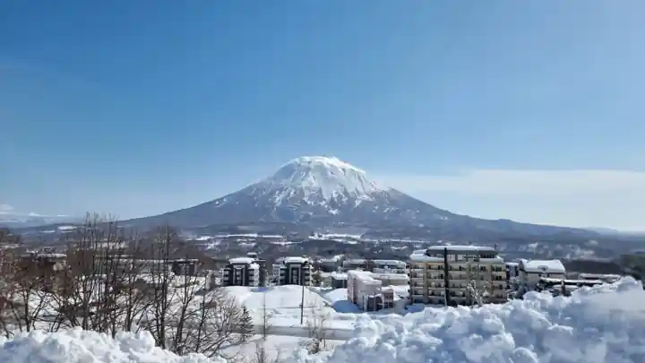

興趣 · GALA 湯澤 · 2025年3月15日
動起來，讓好奇心回來。
滑雪、登山、單車，還有那些純粹因為喜歡而一直做的事。沒有 KPI 的時間，反而最能讓我重新專注、繼續學習，也提醒我生活不只有工作。
Outside work
移動、練習、觀察與理解。
01 · Snow
滑雪
滑雪是少數可以令我完全關掉工作腦袋的活動。天氣、地形、速度與身體反應都要求即時專注，而技術進步或錯誤亦會立即得到回饋。

雪地美景，本身就是滑雪令人難以抗拒的原因之一。 滑雪常常會把我帶到平時很難看到的雪地風景。這次和朋友一起到二世古，除了滑雪本身，那片冬日景色同樣令人難忘。

02 · Endurance

秋與冬，在同一條山徑相遇。 這是我唯一一次在登山途中，同時見到紅葉與積雪。兩個季節交疊在谷川岳，成為我最難忘的登山經歷之一。

慢活，快騎。 我一個下午自己完成了濱名湖約60公里的環湖騎行。這張相是在租車騎的出發點，出發前拍下的。
03 · Seeing
攝影・建築
我會特別留意結構、重複、工程細節，以及光如何改變一座城市。比起只追求「靚」，我更喜歡能保留地方感的照片。
04 · Music
鋼琴
鋼琴和工程工作很不一樣。進步靠重複、聆聽與手感，而且通常很慢。正因為慢，反而令我珍惜。

05 · Systems at home
能源・自動化・智能家居
我喜歡把屋企當成一個小型工程系統來看：太陽能、儲電、能源監測、自動化、home server。重點不是 gadget 愈多愈好，而是令能源可見，並把真正有用的 routine 自動化。
06 · Mobility
EV・科技
電動車吸引我的地方，不只是駕駛本身，而是能源、軟件、充電、電池與基礎設施交會在同一個產品之中。我特別喜歡研究效率與家庭能源之間的連結。
What connects them
有些系統，要親手做過才真正明白。
山、音樂、機械、城市——當你再明白一點它們如何運作，就會再有趣一點。
之後加入：滑雪／登山／單車
之後加入：建築／城市細節
之後加入：科技／Home projects